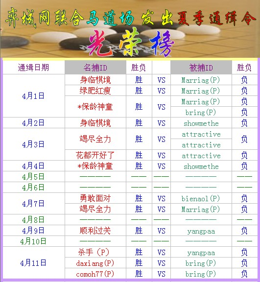

通缉一线：顺利过关与杀手（P）活擒yangpaa 18名通缉者最近状态
#1 通缉一线：顺利过关与杀手（P）活擒yangpaa 18名通缉者最近状态作者：潇洒 发表时间：2009-4-12 13:08:14
通缉令发出的第11天。。。。时间过得真快，18名韩国高手，有些只是在弈城韩国1出现过，但是迟迟没有行动，并没有与中国高手对碰。中国棋手近日，战斗力不足，好不容易追寻到通缉者的踪影，确无法将对手擒下。近四天，韩国高手没怎么现身，中国棋手也无从下手，只好守株待兔，只能韩国高手自愿走进阵地，才能全力抵抗。9日晚顺利过关，活擒17号，今晚杀手（P）再次捕捉到17号，17号成了这几天“名捕”收获了。
另外给大家详细介绍一下18名通缉者最近状态：
1号、玛丽Marriag(P)从通缉开始到11号一共战了17盘，成绩为13：4的好成绩。玛丽是通缉1号，也是四月在弈城最活跃的韩国高手，玛丽（朴永训）在弈城名声大震，这位现实与网络都同样出色的围棋高手，后天就要与富士杯第1轮战胜过崔哲瀚的中国棋手谢赫火拼第2轮，此战将给棋友带来什么样的精彩对局呢？请拭目以待？
如：2号ppjx，此ID2月份可是出了名的风云人物。2月份对局22盘，成绩比玛丽还出色19：3优异的成绩。但三月后一盘没下，不知是不是现实中有比赛，不能来网上豪爽砍上几局。
3号、attractive，4号下了三盘，输给了全力与花开，5号战胜身临棋境扳回一局。
4号、ioiwin(P)小李下了三盘全胜。
5号、besttime还没有开始行动。
6号、whrh 9号与三连星震坤下了96手，可能由于网络问题whrh连接失败后，尽此一局断线告负，希望以后通缉时间里，他有出色的成绩展现出来。
7号、chaos(P)潮湿8号出现连继4盘全胜，分别赢了神童、竭尽全力、米迦尔，中国高手三大战将后，就又隐藏了起来。
8号、yatasty，3月15日对过局之后，4月还没有对弈过；9号、nihao(P)；11号、kobra；15号、luckyking；16号、CrazyAga同样只是上线在韩国1停留过，并没有留下他们的足迹。
10号、崔毒showmethe，首战遇花开，花开并没有花开，而是在崔毒手中花谢了，但中国9段身临棋境与神童，捕获到崔毒，另外崔毒还下了一盘友谊赛，目前4月也是四盘成绩2：2。
12号、bring(P)与中国强九对战10盘，落下了3盘，输给了一盘神童，神童四次挑战，只战胜过他一次，相知不相爱，恶魔在身边也没追捕到他。11日晚，中国棋手出现在二个带P的一个是daxiang(P)这名字很像神童ID的英文名，只是多带了一个（P），是不是神童向官方直接申请的带（P）号，另外一个是comoh77(P)此号与前头P字号一样，4月几号才出现的，弈城中方最近也出现了少个带P的ID，常在韩国1出现。P与P的对抗很有意思，希望有更多中国棋手带着P出现在追捕行动当中。
13号、大李gksrnrwja，只有8号晚，匆匆赢了相知不相爱一盘就下线了。
14号、绝对自尊charisma24，曾经的辉煌，走过的足迹，深深让棋友们记住了他，去年的12月中韩月冠军对抗赛15日*保龄神童战绝对自尊弈币排行榜，他与神童对抗，给棋友们带来了精彩对局。但至今，绝对自尊出现得很少，也很少在韩国1与中国高手下棋。本次通缉中，就很难追捕到他。
17号、yangpaa与中国棋手对局6盘，4胜2负，9日输给了顺利过关和11日杀手（P）。
18号、别闹了bienaol(P)4盘，3胜1负。
愿本次活动越来越走进佳境，越多的精彩对局，带给大家！也愿中国“名捕”的收获越来越多。加油！
本次活动捕捉的功臣具体成绩如下：（更新）

［ 孤竹 于 2009-4-13 17:11:43 时奖励此帖[金币加 20 威望加1］